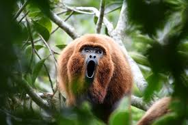
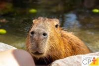

Trabalhando com Listas
Jogos favoritos
- Alan wake 2
- Death Stranding
- Metal Gear
- Metal Gear Solid III
- Metal Gear Solid V
- Metal Gear Solid Peace Walker
- Metal Gear Solid IV
- Metal Gear Solid I
- Metal Gear Solid II
- Control
- Alan Wake
Coisas que eu tenho que fazer hoje
- Lavar o banheiro
- Tirar as coisas de dentro
- Lavar a pia e a privada
- Lavar o box
- Passar pano
- Fazer comida pra noite
- Ver uma aula de algoritmo
- Jogar
Lista de Definição de animais
Bugio 
O bugio, também chamado de guariba e macaco barbado, faz parte do grupo dos macacos do gênero Alouatta: arborícolas, de hábitos herbívoros, corpo forte e cauda longa. Sua característica mais marcante é o som emitido pelos machos que pode ser escutado a longas distâncias. A classificação do Bugio é: Classe: Mammalia.
Capivara 
A capivara ou capincho é uma espécie de mamífero roedor da família Caviidae e subfamília Hydrochoerinae. Alguns autores consideram que deva ser classificada em uma família própria. Está incluída no mesmo grupo de roedores ao qual se classificam as pacas, cutias, os preás e o porquinho-da-índia